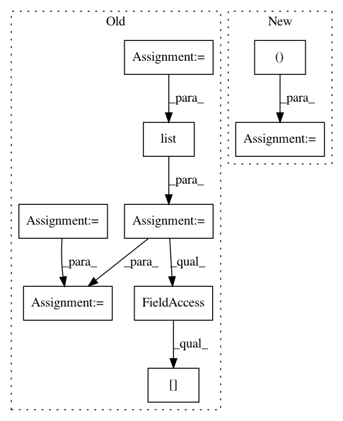

c943318502c17ea9d909e79ce898431282768cb9,plot_poldrack_space_net.py,,,#,6
Before Change
from load_poldrack import load_gain_poldrack
mem = Memory(cachedir="cache", verbose=3)
X, y, _, mask, affine = mem.cache(load_gain_poldrack)(smooth=0)
img_data = np.zeros(list(mask.shape) + [len(X)])
img_data[mask, :] = X.T
// prepare input data for learner
import nibabel
n_samples = img_data.shape[-1]
n_samples_train = n_samples * 8 / 10
mask_img = nibabel.Nifti1Image(mask.astype(np.int), affine)
X_train = nibabel.Nifti1Image(img_data[:, :, :, :n_samples_train], affine)
y_train = y[:n_samples_train]
X_test = nibabel.Nifti1Image(img_data[:, :, :, n_samples_train:], affine)
y_test = y[n_samples_train:]
After Change
mem = Memory(cachedir="cache", verbose=3)
data = mem.cache(fetch_mixed_gambles)("data/Jimura_Poldrack_2012_zmaps",
n_subjects=16, make_Xy=True)
X, y, mask_img = data.X, data.y, data.mask_img
// prepare input data for learner
n_samples = len(X)
n_samples_train = n_samples * 8 / 10
In pattern: SUPERPATTERN
Frequency: 4
Non-data size: 9
Instances
Project Name: nilearn/nilearn
Commit Name: c943318502c17ea9d909e79ce898431282768cb9
Time: 2015-07-28
Author: elvis.dohmatob@inria.fr
File Name: plot_poldrack_space_net.py
Class Name:
Method Name:
Project Name: dask/dask-image
Commit Name: cbbcea8795e8da754a5b3ffb1a08ef66afd84eef
Time: 2018-09-02
Author: jakirkham@gmail.com
File Name: dask_image/ndmeasure/_utils.py
Class Name:
Method Name: _ravel_shape_indices
Project Name: SPFlow/SPFlow
Commit Name: 82478ffacdd98fcc0750ff086af240a3f37a8b10
Time: 2019-08-22
Author: steven.lang.mz@gmail.com
File Name: src/spn/algorithms/layerwise/layers.py
Class Name: Product
Method Name: forward
Project Name: nilearn/nilearn
Commit Name: 07bbcbb72cbfcea9ef10087167163138165c5003
Time: 2015-07-28
Author: elvis.dohmatob@inria.fr
File Name: plot_poldrack_space_net.py
Class Name:
Method Name: